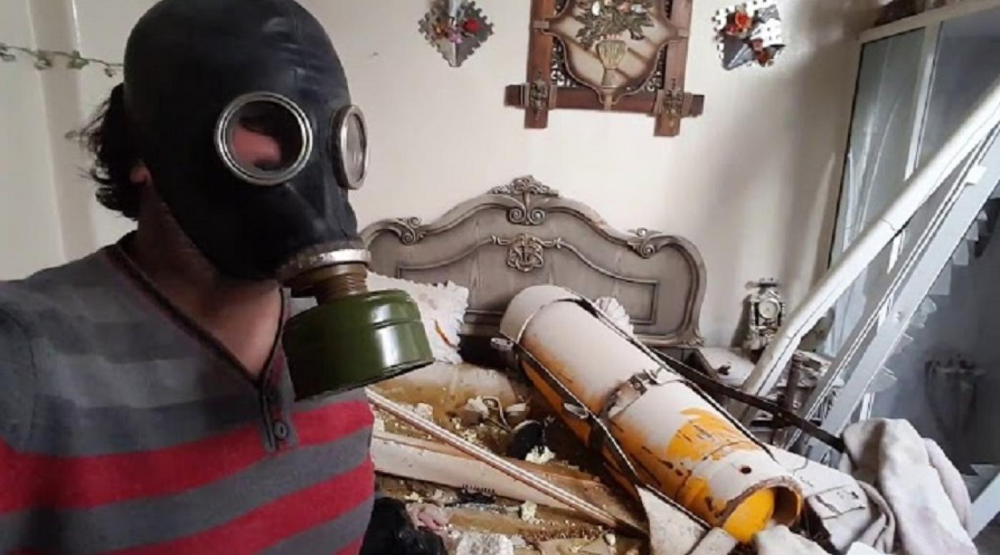
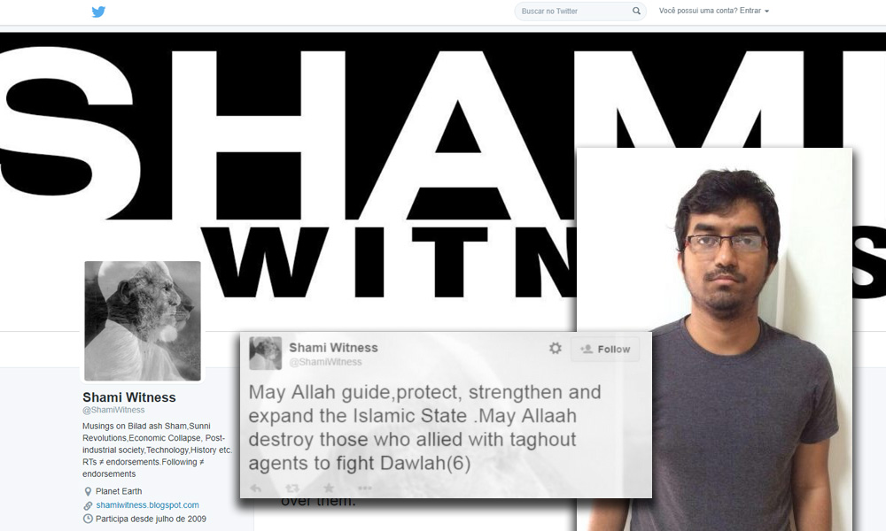
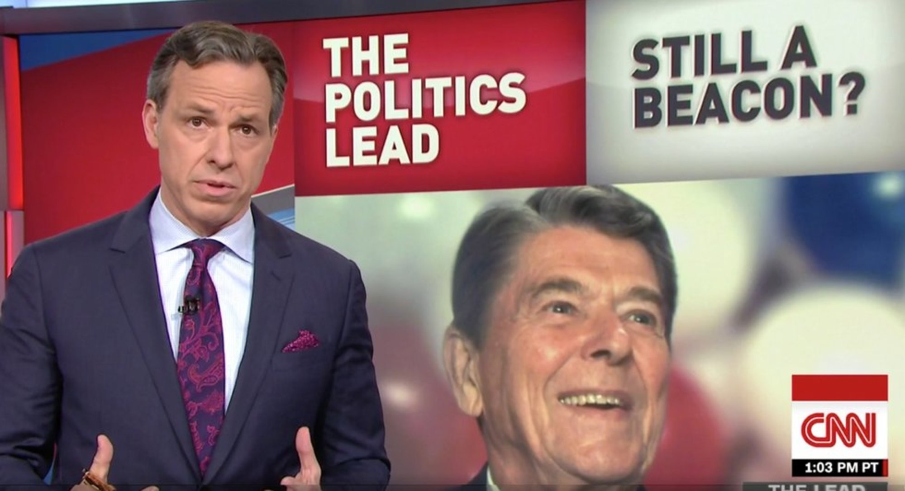
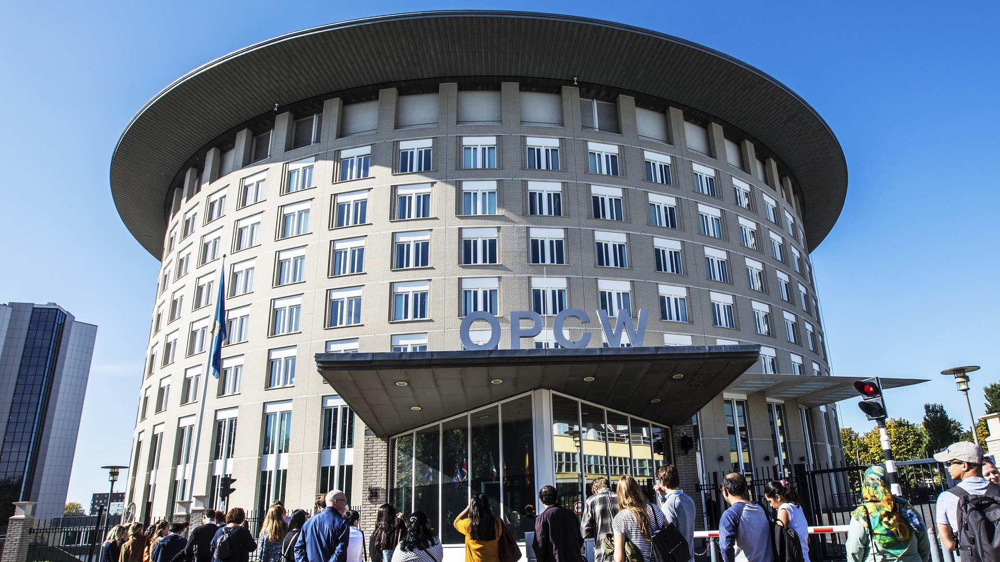

US ambassador confirms billions spent on regime change in Syria, debunking ‘Obama did nothing’ myth
The US government spent at least $12 billion in Syria-related military and civilian expenses in the four years from 2014 through 2017, former ambassador Robert Ford disclosed in a House Foreign Affairs Committee hearing.
The United States spent at least $12 billion in Syria-related military and civilian expenses in the four years from 2014 through 2017, according to the former U.S. ambassador to the country.
This $12 billion is in addition to the billions more spent to pursue regime change in Syria in the previous three years, after war broke out in 2011.
This striking figure provides a further glimpse of the exorbitant sums of money the U.S. spent trying to topple the government in Damascus.It also bluntly contradicts claims by Syrian opposition supporters that the former administration of President Barack Obama 'did nothing' in Syria, or that it supposedly did not seek regime change fervently enough.
Former U.S. ambassador to Syria Robert S.Ford disclosed this information in written testimony prepared for a House Foreign Affairs Committee hearing on February 6.
'The cost of US military operations in Syria between FY 2014 and the end of FY 2017 was between $3 and $4 billion,' Ford said.'In addition to the cost of those military operations, the FY 2017 budget request included $430 [million] to build local security forces and the FY 2018 request was for $500 million.'
The former ambassador did not distinguish what proportion of this spending went specifically to fighting ISIS.Although he made clear that some of it was directed at the Syrian opposition.
Ford also reported that the U.S. spent $7.7 billion in humanitarian aid efforts in Syria in those same four years.This figure cannot be excluded from the overall cost of the U.S. regime-change mission, however, because U.S. spending on humanitarian aid in Syria has often been explicitly politicized.
The U.S. State Department, USAID, and other government agencies have refused to provide humanitarian aid to government-held areas in Syria and have instead expressly used the funding to bankroll the political, civil, and health infrastructure of rebel-held territory, including areas that are governed by Syria’s al-Qaeda affiliate, Jabhat al-Nusra.The Guardian exposed how similar aid initiatives by the British government financed the activities of al-Nusra and other extremist Salafi-jihadist militias.
Ford acknowledged in his testimony that U.S. humanitarian aid to Syria was heavily politicized, explaining:
The U.S. also has deployed a small civilian team into Syria charged with initial reconstruction and building new local governance or improving on existing local governance.If it sounds like nation-building, it is but on a smaller scale.USAID and other civilian agencies have provided $875 million in non-lethal and stabilization aid to opposition-controlled areas in Syria since FY 2012.Last year alone the US provided about $200 million.
This politicized humanitarian funding has been part of a concerted effort to undermine the Syrian government’s control over Syrian territory by creating independent political administrations, civil society organizations, health institutions, and infrastructure that are outside of its control, effectively establishing de facto autonomous governments that survive on U.S. funding.
In fact, Ford went so far in the House Foreign Affairs Committee hearing as to condemn United Nations humanitarian aid programs, claiming they are 'basically subsidizing Assad' by supporting civilians in government-held territory (which comprises the vast majority of the country).
'If you add all these numbers up, US military and civilian costs in Syria over the past four years are at least $12 billion,' Ford said in his written congressional testimony.'That’s a lot of money.And it’s not clear when those outlays will stop.'
Joshua Landis, a leading academic expert on Syria, speculated that the $12 billion figure may not include spending by the Central Intelligence Agency.
The New York Times noted that the CIA program in Syria was 'one of the most expensive efforts to arm and train rebels since the agency’s program arming the mujahedeen in Afghanistan during the 1980s,' which gave birth to al-Qaeda and the Taliban.
The CIA likely spent billions of dollars pursuing regime change in Syria, although exact estimates vary.
In June 2015, The Washington Post reported that CIA covert operations in Syria had 'a budget approaching $1 billion a year.'The report continued: 'At $1 billion, Syria-related operations account for about $1 of every $15 in the CIA’s overall budget, judging by spending levels revealed in documents The Washington Post obtained from former U.S. intelligence contractor Edward Snowden.'
U.S. officials told the Post these CIA efforts were 'part of a broader, multibillion-dollar effort involving Saudi Arabia, Qatar and Turkey to bolster' the Syrian opposition.
A January 2016 report by The New York Times likewise revealed that Saudi Arabia helped finance U.S. operations in Syria, and 'estimates have put the total cost of the arming and training effort at several billion dollars.'Significant funding also came from Qatar, Jordan, and Turkey.
By August 2017, however, the Times had significantly downplayed the price of the operations at 'more than $1 billion over the life of the program' — even while acknowledging that it was 'one of the costliest covert action programs in the history of the C.I.A.'
Robert Ford’s disclosure constitutes the latest admission by a government official that the cost of U.S. operations in the Syrian war have exceeded 11 digits, extending into the tens of billions.
It also stands in stark contrast to the claims of pro-opposition advocates and pundits, who have breathlessly insisted that the administration of President Barack Obama was not serious about overthrowing the government of Syrian leader Bashar al-Assad.
Media watchdog Fairness and Accuracy In Reporting (FAIR) has repeatedly documented the claims that 'Obama did nothing' in Syria, a lie that has persistently been spread by some of the world’s most high-profile journalists.
The editorial boards of leading newspapers and senior politicians in the U.S. and Europe have contributed to this popular myth.Obama’s liberal and conservative critics alike have excoriated him for supposedly 'shrugging' and 'sitting idly by.'
The lie that the U.S. 'did not intervene in Syria' has been repeated by figures from Senator John McCain to New York Times reporters and beyond.
Robert S.Ford is a senior fellow at the Middle East Institute, an influential Washington, D.C.-based think tank that is funded largely by the governments of the United Arab Emirates and Saudi Arabia.
MEI largely acts as a vehicle for Emirati influence in the U.S. Leaked emails show the think tank has been used to give an appearance of independence to UAE-backed foreign trips with U.S. diplomats.
The testimony in which former ambassador Robert Ford revealed this information was prepared for the House Foreign Affairs Committee hearing 'Syria: Which Way Forward?', which also featured some of Ford’s extremely hawkish colleagues at MEI.
MEI senior fellow Charles Lister, who has for years lobbied for the United States to violently overthrow the Syrian government, while whitewashing the Salafi-jihadist rebels in Syria, also prepared written testimony in which he lamented the failure of the regime-change program and proposed new ways to bring down Assad.
Congresswoman Ileana Ros-Lehtinen, a hardline neoconservative who serves as chair of the House Subcommittee on the Middle East and North Africa, opened the hearing stating that 'many people were encouraged by Secretary Tillerson’s recent speech' in which he called for a 'Syria under post-Assad leadership.'
In this speech in January, Tillerson confirmed that U.S. troops will remain in Syria indefinitely, even after ISIS is defeated.He also reaffirmed the Trump administration’s commitment to regime change, and called on the international community to economically undermine Damascus by refusing to fund reconstruction efforts.
Ford and Lister joined Ros-Lehtinen in praising Tillerson for outlining these goals, but lamented that specific actions were not proposed by the administration to bring them to fruition.
How exactly the U.S. is going to bring about regime change in Damascus at this point remains unclear.In his prepared testimony, Ford conceded that the 'Syrian and Iranian governments, and Russia, all want us out of Syria.'
Posted On: 2018-02-09T00:00:00
Posted By: Ben Norton




Content Date: 2018-02-09
Download Date: 2021-05-07
Document ID: L0C04AV6D